Core product surfaces
- Daily Dash scheduling, nutrient rings, and progress feedback
- Meal Hub planning, grocery, and prep flows
- Fitness Hub focus, execution, and logged outcome states
- Profile and settings controls that shape generation behavior
NourishAI / Public Demo
This page shows NourishAI through a recorded Aurora walkthrough, selected iOS screens, and a quick comparison of the alternate visual themes used in the app.
Overview
The goal is simple: show the app clearly, show state changing on screen, and keep the public boundary obvious.
Walkthrough
This is the clearest way to review the product. It moves through the dashboard, profile, meal planning, and back into updated dashboard state.
Daily Dash to profile and settings, into meal planning, then back to the dashboard with updated state.
Screens
Selected screens grouped by the product questions they answer.
Home context, action timing, and progress feedback on the main daily surface.
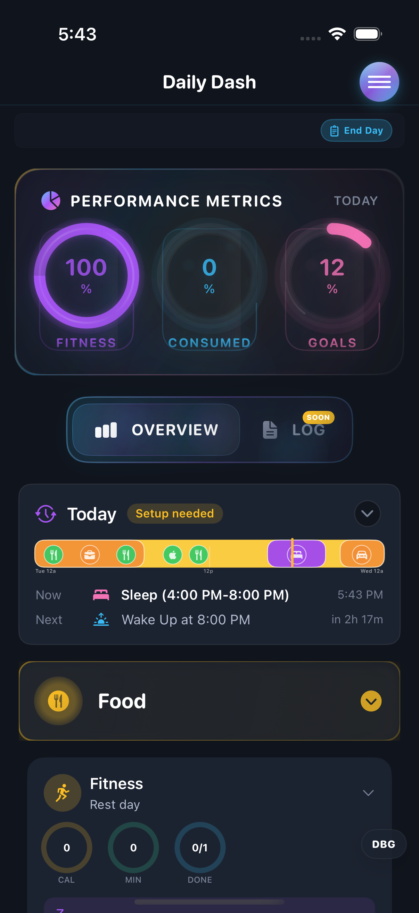
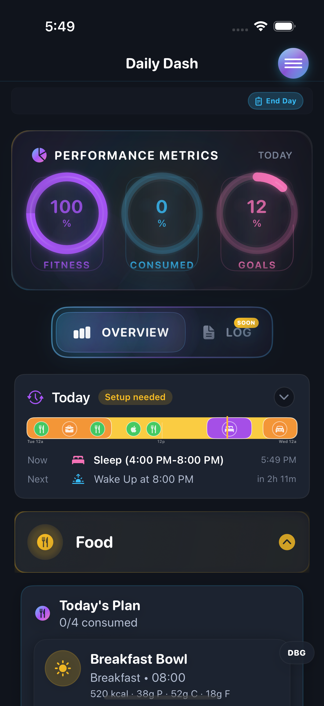
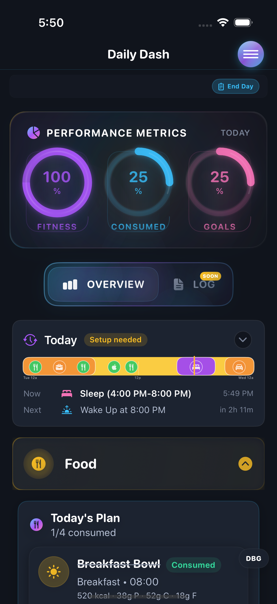
Planner, grocery, and prep modes for moving from recommendation to execution.
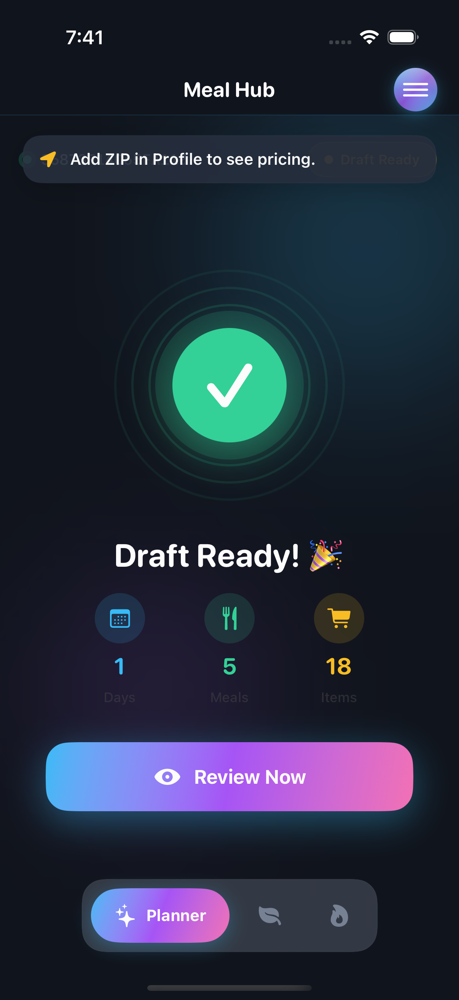
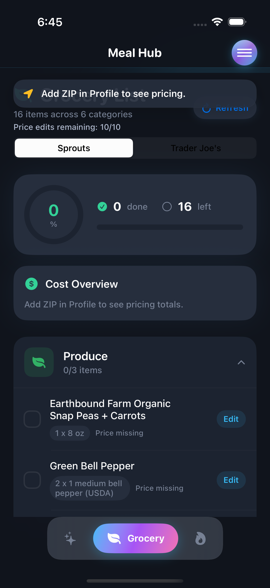
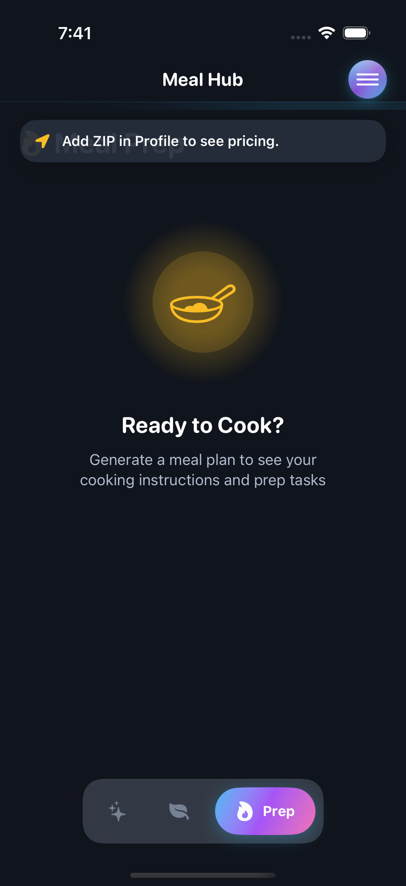
Weekly training context, session launch, and the controls that shape the experience.
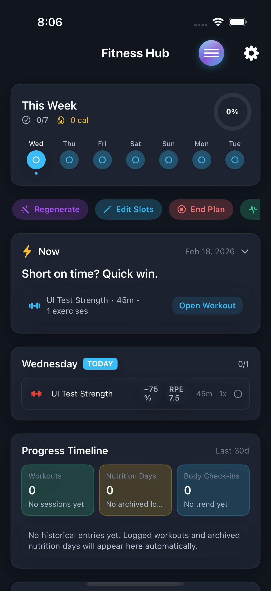
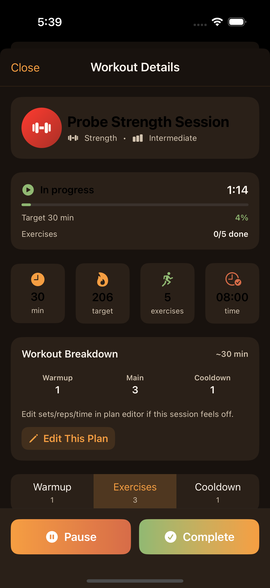
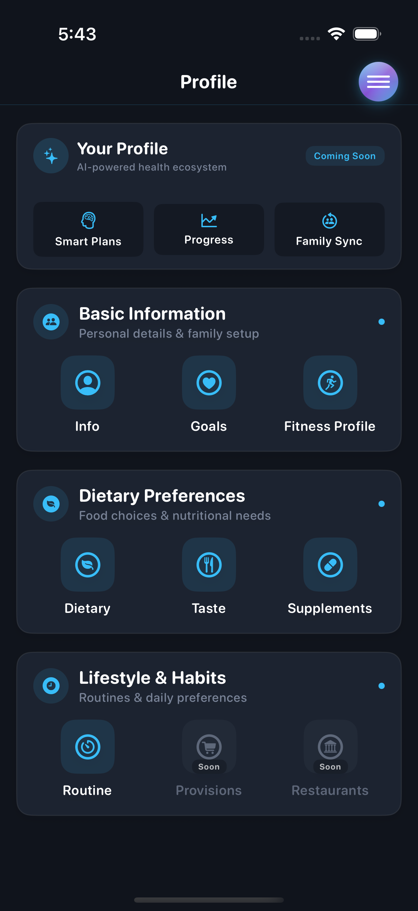
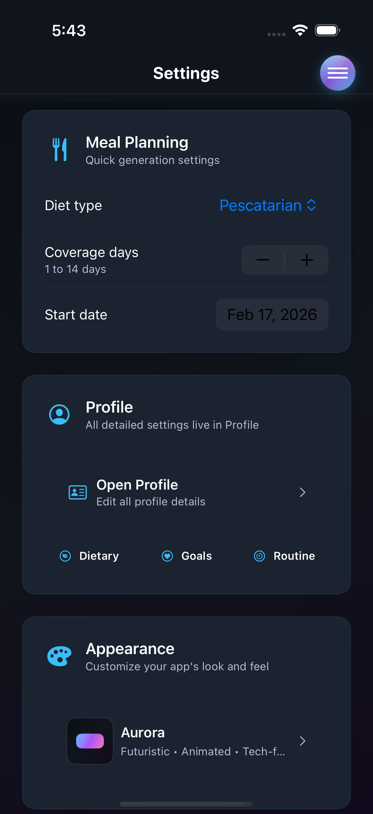
State Change Proof
These frames show the dashboard updating after nutrition actions.
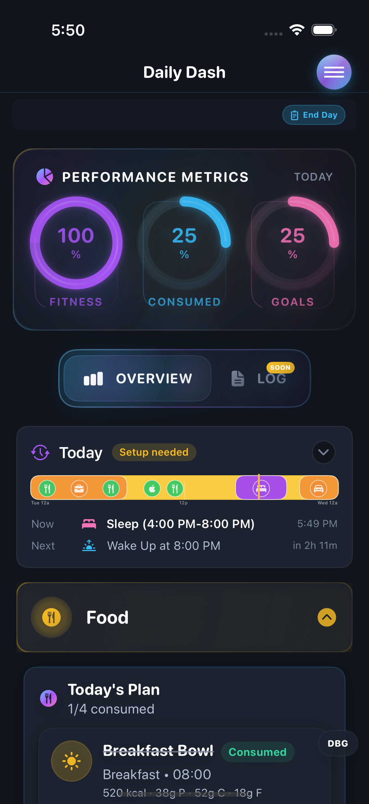
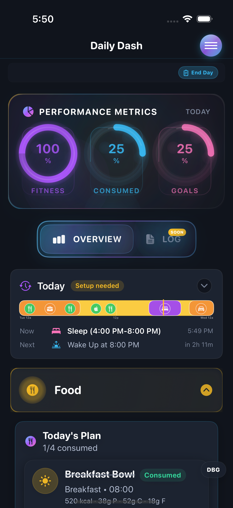
Variants
The walkthrough stays in Aurora. This section shows the same surfaces across the alternate themes.
Aurora theme
Scope
This page is limited to assets that are safe to host publicly on GitHub Pages.